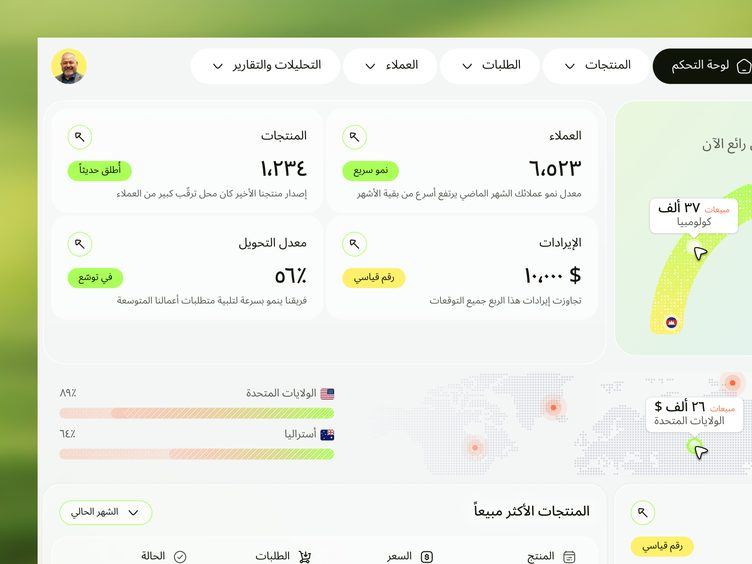

Orderze - AI Powered Order Management SaaS Dashboard UI Design
by Mahmudul Hasan Manik
SaaS · dashboard · 电商SaaS · Dashboard · E-commerce
阿拉伯语 RTL 订单管理仪表盘 Orderze：产品、客户、转化率、收入四张数据卡配世界地图订单分布，绿色点缀提亮浅色界面；电商 SaaS 用“四张数字卡 + 一张世界地图”把店铺运转收进一屏，RTL 排版也值得借鉴。Orderze, an Arabic RTL order-management dashboard: four stat cards — products, customers, conversion, revenue — above a world map of orders by country, green accents lifting the light interface; four numbers and one map fit a whole store into a single screen, and the RTL layout is worth studying too.